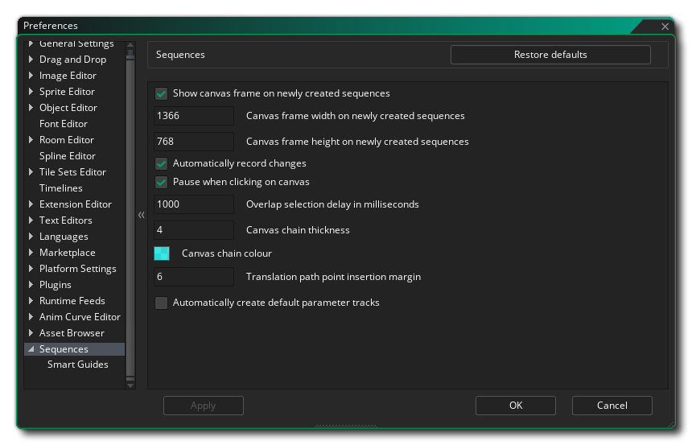

The Sequences Preferences are used to define certain properties for how the Sequences Editor and its elements function. The main options are:
- Show canvas frame on newly created sequences: When
enabled, the canvas frame smart guide will be shown in the
canvas of the Sequence Editor for all new sequences. This option
can be enabled/disabled as required from the canvas properties in
the editor itself too. Default value is enabled.
- Canvas frame width on newly created sequences: Here you
can set the default frame width for all new sequences. Default
value is 1366px.
- Canvas frame height on newly created sequences: Here you
can set the default frame height for all new sequences. Default
value is 768px.
- Automatically record changes: This option will enable
the "Automatically record changes" button in the Sequence Editor
for all new sequences that you add. This can be enabled/disabled
from the sequence editor itself too. Default is enabled.
- Pause when clicking on the canvas: When this option is
checked, clicking anywhere in the Sequence Editor canvas will pause
the sequence playback. This is enabled by default.
- Overlap selection delay in milliseconds: This controls
how long you need to wait before the Item Toolbox will pop up for
overlapping items on the Sequence Editor canvas. Default value is
1000ms.
- Canvas chain thickness: This is the thickness (in
pixels) for all chained elements within the Sequence Editor canvas.
Default value is 4px.
- Canvas chain colour: This is the colour that is used for
all chains between elements in the Sequence Editor canvas. Default
value is $A800FFFF (argb).
- Translation path point insertion margin: In the Sequence
Editor canvas, when you have added an asset and then created a
position parameter track, there will be dotted lines drawn to
demonstrate the path that the asset will take when moving. If you
place your mouse close to this line, then you can add a new
parameter track point to it, and this option sets the distance from
the translation line that the mouse needs to be before the point
marker will be shown. Default value is 6px.
- Automatically create default parameter tracks: When
enabled, this option will automatically add parameter tracks for
position, scale, rotation and origin to any new tracks created in
the Track Panel of the sequence. Default is disabled.

Here you can select the behaviour of the smart guides when working in the Sequences Editor. The available options are:
- Enable Smart Guides: Here you can enable or disable the smart guides in the Sequences Editor canvas. This is enabled by default.
- Enable Rulers: Here you can enable or disable the smart guides in the Sequences Editor canvas. This is enabled by default.
- Snap Rulers To Edges: This option will enable rulers to "snap" to the edges of assets in the sequences canvas (and vice versa). Default is enabled.
- Snap Distance: This is the distance (in pixels) that an item needs to be to a ruler (or a ruler to an item) for it to "snap" to the position. Default value is 6px.